Data Preparation
Summary Flow Chart

We chose to set our project CRS as EPSG:3197 as it is the CRS with the smallest extent that includes our study area.
Data Download
- Analytical hexagon from SMT201-AY2023-24T1 - GIS Project for extent of study area.
- OpenStreetMap (OSM) of Libya (as of 23 oct 2023 unless otherwise indicated)
OSM Roads (download both 1 Sep 23 and 23 Oct 23)
OSM Points of Interests (points): for shelters and desalination plants (waterworks)
OSM Places of Worship (points): for shelters
OSM_transport_a(polygon): for airports
OSM Landuse_a
HumData Flood Impact Assessment’s FloodExtent (first of the selection shown in the first picture, pink polygon in the second picture).
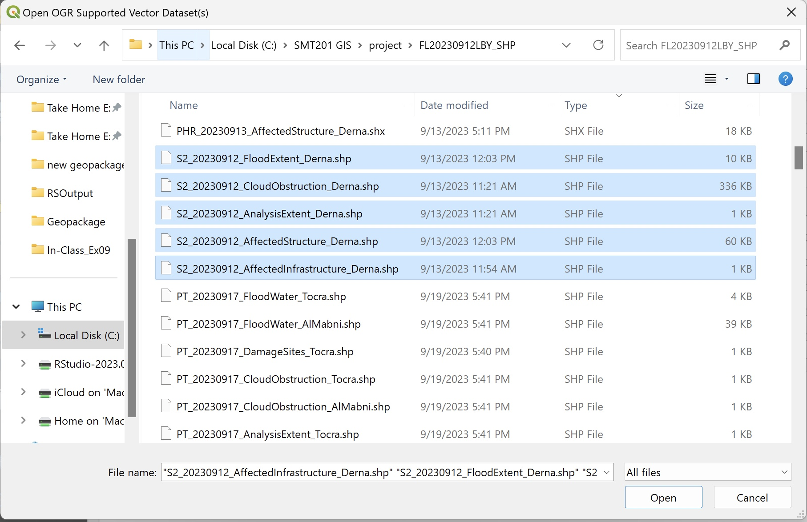
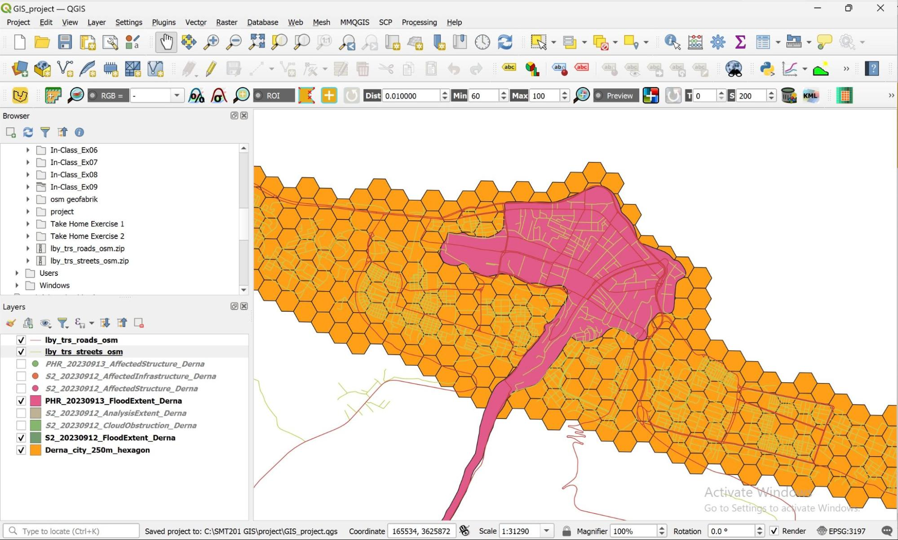
HumData Health Facilities (polygons) → Hospitals
- Don’t include clinics as they overlap with hospitals, the other is within the flood extent
Copernicus EMSR roads to determine usable roads during/after the flood.
- Download the “AOI base layers” (aka BLP, used in the before scenario) and “Crisis Information” (aka GRA, used in the during and after scenario) under Derna’s tab.
Satellite data from OpenAerialMap
From the main page, zoom in to Libya and to Derna city. Afterwards, select the relevant date(latest data as of creation of report was 13 September 2023). Then download accordingly.
Data Preparation and Cleaning
From the downloaded data:
Import the Analytical Hexagon of Derna.
Import from Humanitarian Data Exchange portal
Import the latest flood extent
Import health facilities
Import from OSM
Points of Interest(poi)
Roads
Places of Worship(pofw)
Health Facilities
Imported health_facilities_polygon(hospitals)
- Clip by extent using Derna hexagon layer to obtain hospitals in Derna
- Open the attribute table
- Double click to input المستشفى الشاعري الألماني for the feature with null value as its name.
- Untoggle editing mode using the pencil icon to save the changes
Save to geopackage:
Health facilities(save as hospitals)
Shelters
Import OSM points of interest, and OSM places of worship.
From Menu Bar, open Vector → Geoprocessing Tools → Clip
Clip each of the two layer using the Derna hexagon layer. Rename them to derna_poi and derna_pofw.
Click once on derna_poi, then click on ‘Select by expression’.
Type the following expression: “fclass” in ( ‘community_centre’ , ‘school’ , ‘hotel’ , ‘college’ , ‘guesthouse’ )
Export Selected Features from derna_poi as evacuation, using the project CRS.
From the Menu tab, go to Vector → Geoprocessing tools → Union
Select evacuation and derna_pofw as the input and overlay layers. Click ‘Run’, then click ‘Close’ if it ran successfully.
Open the attribute table of the temporary union layer.
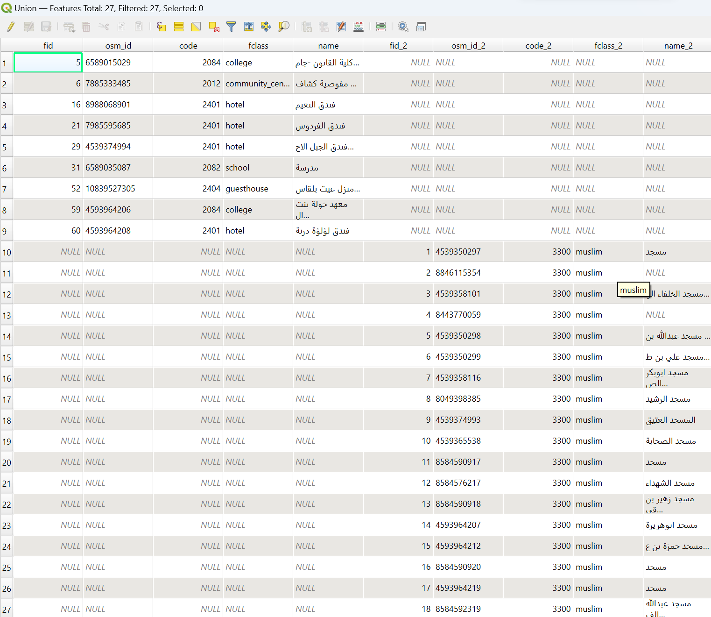
Cleaning up the fields
Click on Field Calculator icon
Check the ‘Update Existing field’ checkbox.
Type the expression coalesce(“field”,“field_2”)e.g. For OSM_ID, coalesce(“osm_id”,“osm_id_2”)
- Use the expression @id for fid
Then click ‘OK.’
Repeat the above steps for code, fclass, name, and fid.
Untoggle the pencil icon to save the changes.
Close the attribute table.
In the layers panel, double click on the union layer to open its properties.
Navigate to fields.
Click on the pencil icon to toggle editing mode.
Select all the fields that end with “_2.”
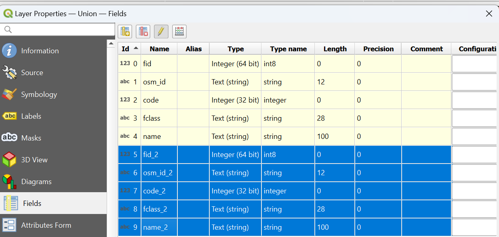
Click on the delete field icon 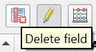.
Untoggle the pencil icon to save changes
Click ‘Apply’ then ‘OK’ to apply the changes and close the properties window.
Open the attribute table
Double click to input مسجد موسى بن نُصير (shelter 13) and مسجد ابو بكر الصديق (shelter 11) for the feature with null value as its name. If uncertain which to input, you may compare the location with Google map to find the correct name.
Untoggle editing mode using the pencil icon to save the changes
Right click on the union layer and export it to the geopackage as shelters, with EPSG 3197. Set geometry as Point.
Remove the temporary layer, original evacuation layer, and original pofw layer.
Centroids
Data Used:
BLP transportationL (lines) layer from EMSR
OSM landuse
Flood extent (from humdata)
XYZ tiles osm map
Processing → Toolbox. Search for ‘Polygonize’ and select the one under Vector geometry (not the one under GDAL Raster conversion).
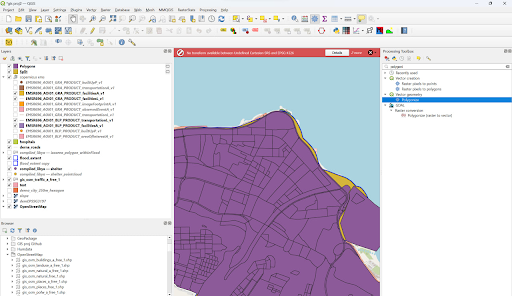
Set the EMSR BLP transportationL layer as the input
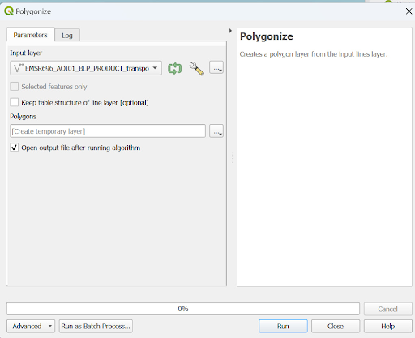
From the menu bar, go to Vector -> Geoprocessing tools -> Clip.
Select the polygonised layer as input and flood_extent as overlay layer
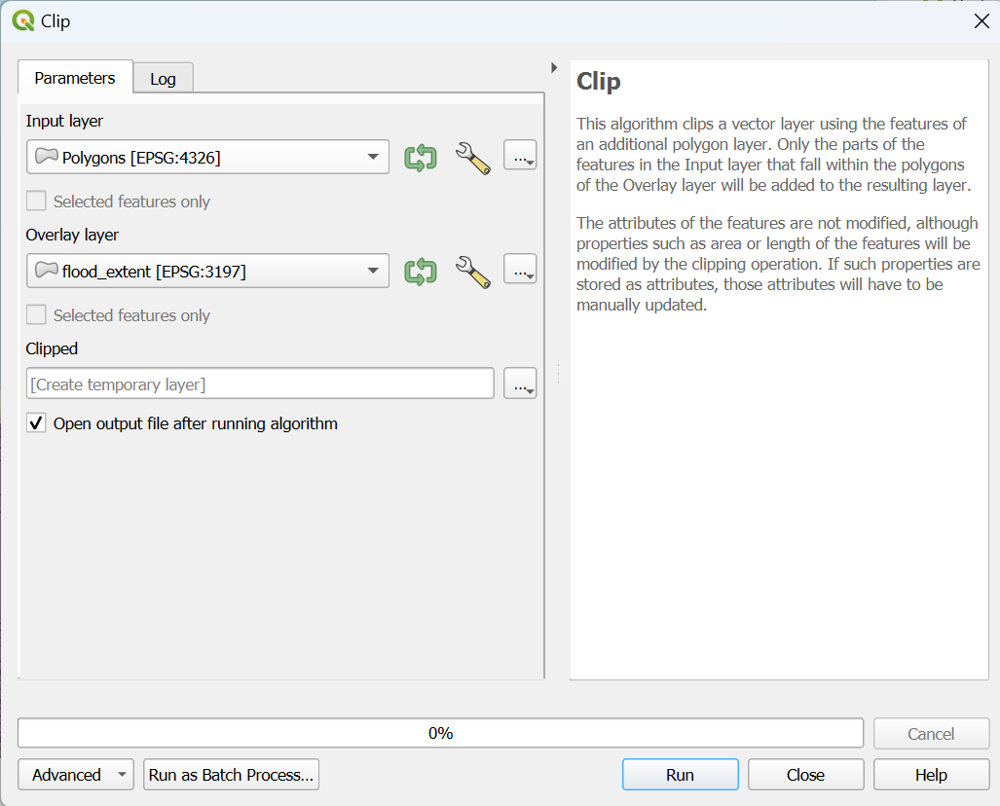
Save as flood extent neighbourhoods, EPSG 3197
Remove the temporary clipped and polygon layers
Load the gis_osm_landuse_a_free_1 layer
Select by Expression:
“fclass” = ‘residential’.
Close the selection window
From menu bar, go to Vector → Geoprocessing Tools → Clip
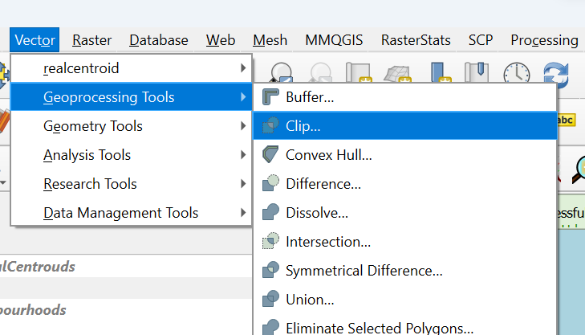
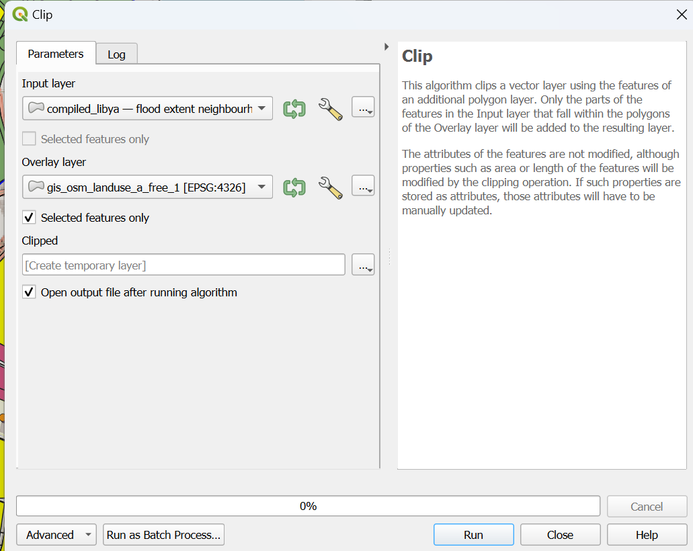
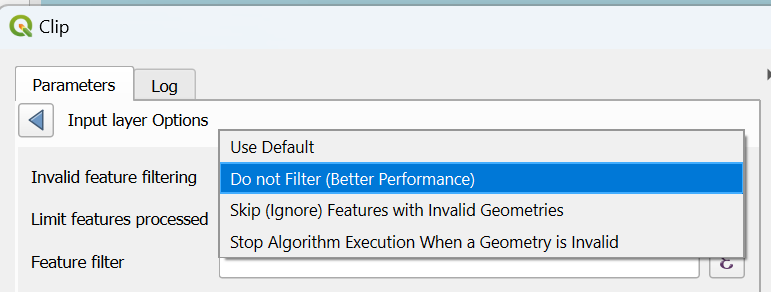
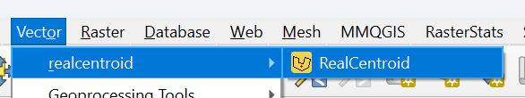
Install real centroid if you have not.
Browse for somewhere to save the output shapefile
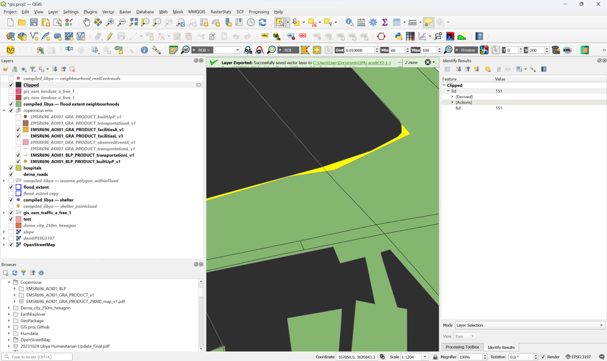
Notice there are additional silvers we need to remove.
In the main project window, set the clipped layer on top of the OSM XYZ tile background
Right click the layer from the layer panel and open attribute table
Click on Field Calculator.
Create a new field titled area, with decimal field type, using the expression $area
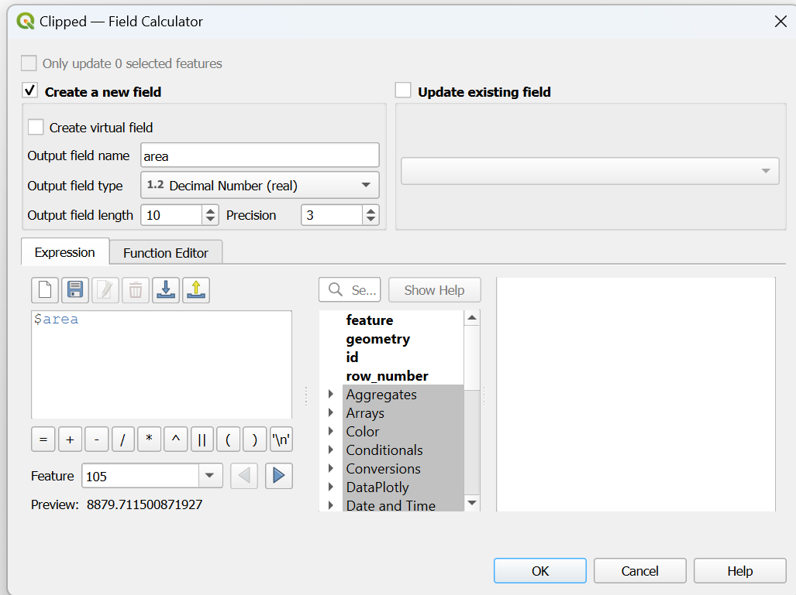
Sort the field from the smallest to largest area
Starting from the smallest area, select the topmost row.
Click on the pencil icon to toggle editing mode if it is not already turned on
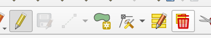
In main project panel, right click and click Zoom to selection
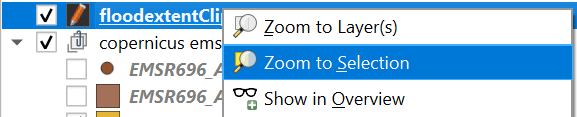
Toggle layer on and off to ensure that the polygon selected does not cover any building on the xyz tiles osm map
If the feature highlighted is a silver (does not cover any buildings), delete it, or adjust the vector according to the OSM background
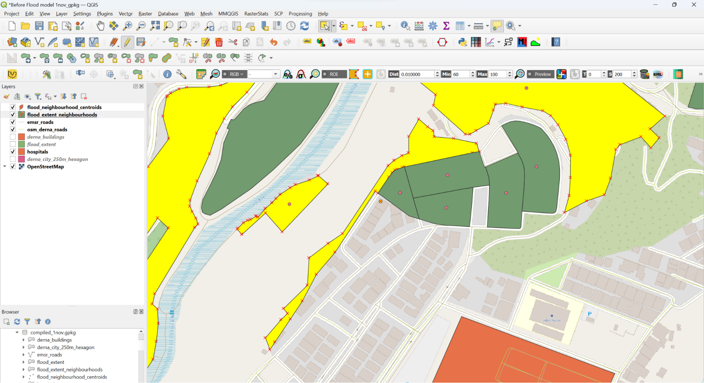
For the thin strip shown above, we will remove it and assume the people in the 2 half-flooded buildings will go to the polygon near the river to collect their supplies, so the centroid moves northeast where 6 buildings are
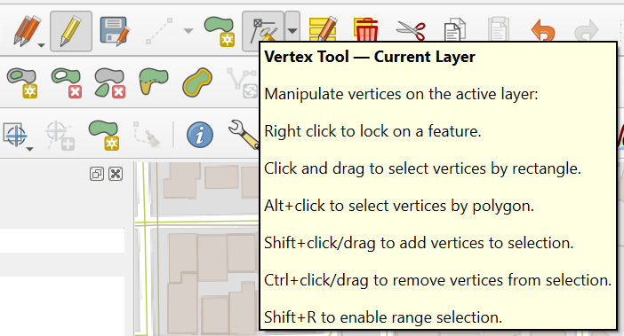
We hence shorten it to produce this
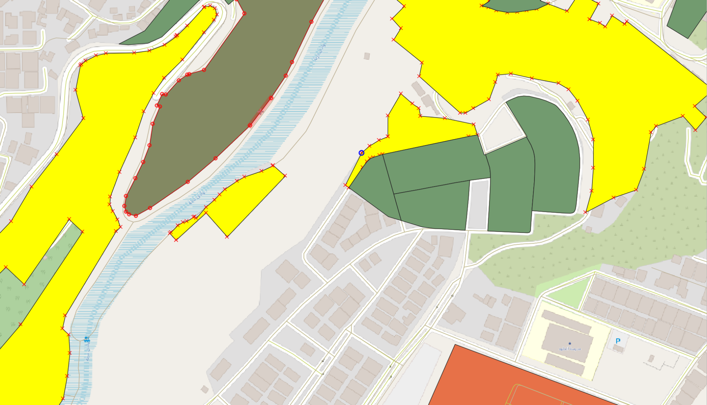
From the menu bar, go to Vector → Geometry tools → Centroids
Set the input layer as the clipped layer you just edited, and check ‘Create centroid for each part’ as some features contain multiple polygons.
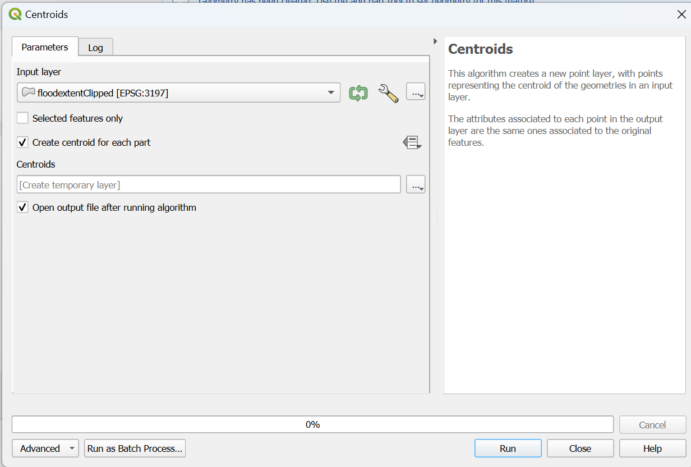
Open the centroid layer’s attribute table
Open field calculator
Check update existing field, select fid from the field dropdown, use @id as the expression, then click OK.
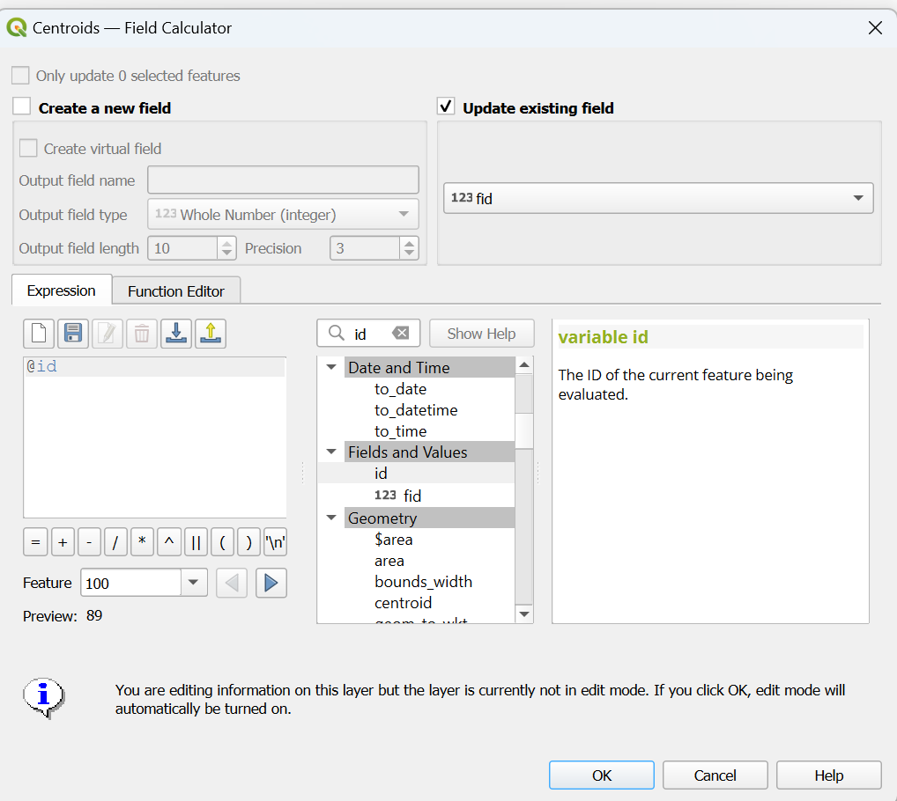
Untoggle pencil icon editing mode to save the changes
Close the attribute table
Save to geopackage as flood_neighbourhood_centroids
Here’s what it looks like:
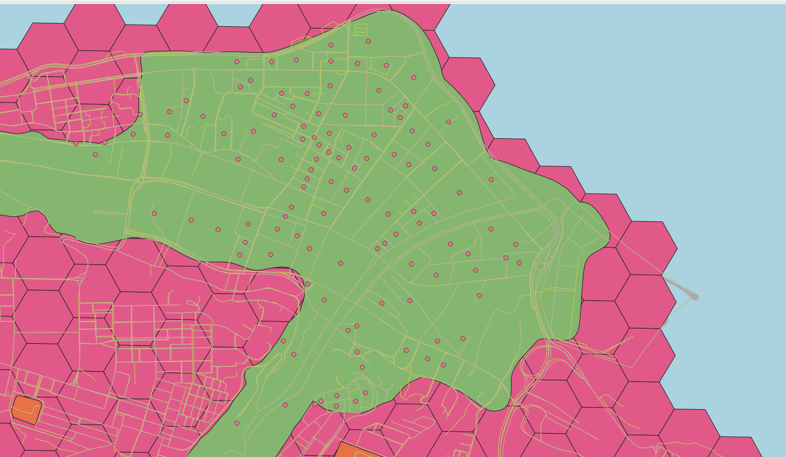